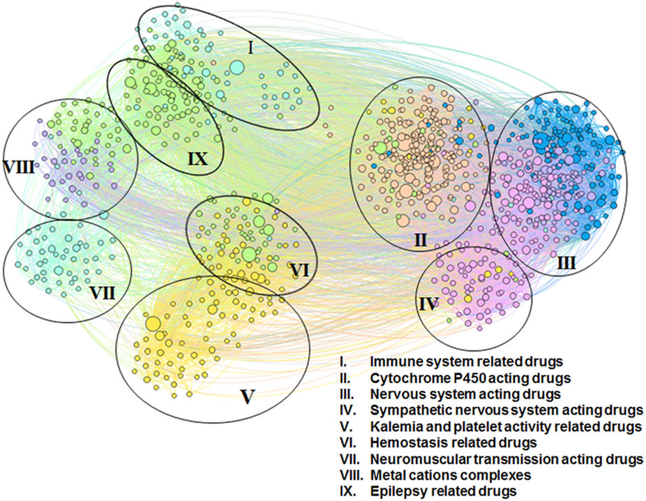

|  |
Despite significant efforts invested in drug discovery, the drug design process is cumbersome, slow, prone to many errors, and expensive in time and monetary units. For instance, the discovery of bio-active molecules targeting a disease or viral infection can take years and cost millions of dollars. These challenges are even further exacerbated by the accelerated resistance of various bacteria/viruses or the unwanted adaptation of diseases to current treatments. In contrast, computational methods are powerful and promising tools for drug mining and repositioning. Moreover, drug repositioning can be achieved faster and cheaper through computational and mathematical approaches that enable a truly personalized and precise medical treatment for the patient’s diseases.
To overcome the challenges of current drug repositioning methods (that rely on chance and are achieved by experimentally exploring the link between molecular structure and biological activity), we developed a computational approach that analyzes the drug-drug interaction networks to uncover the functional drug categories along with the intricate relationships between them via algorithmic clustering techniques. Using modularity-based and energy-model layout community detection algorithms, we classify the drug-drug interaction network into 9 clusters with relevant pharmacological properties (e.g., immune system related drugs, nervous system acting drugs). Our results recover recent and old repositioning, but also indicate new potential drug repurposing. We are extending this topological approach to applications for the analysis of drug-target interactions or for phenotyping patients in personalized medicine applications.